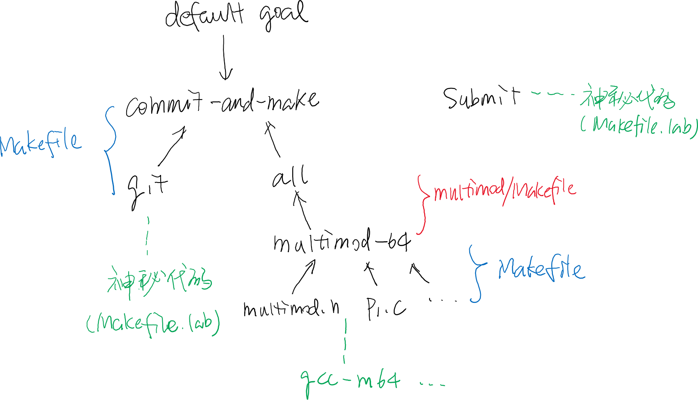

<html>
  <Head>
<meta http-equiv="Content-Type" content="text/html; charset=utf-8">

    
<link rel="stylesheet" href="../static/css/bootstrap.min.css"/>
<link rel="stylesheet" href="../static/css/bootstrap-theme.min.css"/>


    <link rel="stylesheet" href="../static/css/fonts/crmison.css"/>
    <link rel="stylesheet" href="../static/css/fonts/fira_code.css"/>
    <link rel="stylesheet" href="../static/css/fonts/ptsans.css"/>
    <link rel="stylesheet" href="../static/css/katex.min.css"/>
    <link rel="stylesheet" href="../static/css/wiki.css"/>
    <link rel="stylesheet" href="../static/css/codehilite.css"/>

    <script src="../static/js/jquery.min.js"></script>
    <script src="../static/js/bootstrap.bundle.min.js"></script>
    <script src="../static/js/katex.min.js"></script>
    
<link rel="stylesheet" href="../static/css/wiki.css"/>
<link rel="stylesheet" href="../static/css/slides.css"/>


    <title>框架代码选讲</title>
  </Head>
  <body>
   
   
<textarea id="source">
public: True
class: center, middle

# 框架代码选讲

蒋炎岩 <jyy@nju.edu.cn>

南京大学计算机软件研究所

---

# 本次课内容

> 编程实验已经开始进行，但新手多多少少对迈出 “第一步” 还是有相当的恐惧。
> 
> 通过讲解代码，对 “项目是怎么做出来的” 建立更直观的认识。

----

* Lab 框架代码选讲
* PA 框架代码 (NEMU) 选讲

---

class: center, middle

# RTFSC: ics-workbench

---

# 下载框架代码

首先，[RTFM](ICS2019_Code)：

```bash
git clone https://github.com/NJU-ProjectN/ics-workbench.git
```

----

老套路，是个 Git repository

* 什么？只有一个 Makefile？
* Make: 出错 `Should make in each lab's directory.  Stop.`

----

为什么——.red[一切问题都有解释，不要瞎猜，RTFM/RTFSC]

```Makefile
ifeq ($(NAME),)  # 如果 “NAME” 变量为空
$(error Should make in each lab's directory) # 报错并退出
endif
```

---

# Lab1

```bash
git pull origin lab1 # 拉取远程分支
```

将会出现 `multimod` 目录，内有 Makefile 和一些 `.c`, `.h` 文件

----

这个 Makefile 还是很好读懂的

* .red[读起来就像自然语言]，查手册确认
* 理解 Makefile 的根本：Make 主要完成.red[字符串替换]

```Makefile
NAME := $(shell basename $(PWD)) # NAME := multimod
export TASK := Lab1              # 设置环境变量 TASK (和 PA 一样)
all: $(NAME)-64                  # default goal: multimod-64

include ../Makefile              # 同 C #include
include ../Makefile.lab
```

---

# Makefile

翻译后的 Makefile

* 理解起来就容易了：各种 build rules + shell commands
* Makefile 是一种 specification language，用于.red[生成 shell 命令]

```Makefile
SRCS   := ./p1.c ./p2.c ./p3.c ./main.c
DEPS   := ./multimod.h ./p1.c ./p2.c ./p3.c ./main.c
CFLAGS += -O1 -std=gnu11 -ggdb -Wall -Werror -Wno-unused-result 
 
.PHONY: all git test clean commit-and-make 
 
.DEFAULT_GOAL := commit-and-make # 修改 default goal (先前是 all)
commit-and-make: git all 
 
multimod-64: ./multimod.h ./p1.c ./p2.c ./p3.c ./main.c
  gcc -m64 -O1 ... ./p1.c ... ./main.c -o multimod-64
 
clean: 
  rm -f multimod-64
```
---

# Make 原理

Make 由若干 targets 组成，targets 互相依赖

* 按照拓扑排序 build
* 已满足的依赖不重复 build

----

.center[]

---

# 小结

Lab 的 Makefile 做的事情非常简单：

* 如果 `multimod.h p1.c p2.c p3.c main.c` 中的任何一个发生变化，重新调用 `gcc -m64 ...` 编译生成 `multimod-64` 可执行文件
* 无论是在 IDE 中按下 “Build”，或者大到 Linux Kernel，build system 工作的基本原理都是相似的
---

# Makefile.lab: 神秘代码

作业提交：`submit`

```bash
cd $(dir $(abspath $(lastword $(MAKEFILE_LIST)))) && \
  curl -sSL '.../submit.sh' | bash
```

----

RTFM: [`MAKEFILE_LIST`](https://ftp.gnu.org/old-gnu/Manuals/make/html_node/make_17.html)

* `cd` 到 `Makefile.lab` 所在的目录，下载 `submit.sh` 并执行
* `TASK` 已经在 `multimod/Makefile` 中设置过

---

# Makefile.lab: 神秘代码 (cont'd)

Git tracing (the big boss is watching you)

* 曾经，[抄代码非常猖獗](https://zhuanlan.zhihu.com/p/40568346)，直到……

----

```bash
git add $(shell find . -name "*.c") \
        $(shell find . -name "*.h") \
        -A --ignore-errors  # 把所有代码文件添加到 Git repository

# 等待 Git 后台任务完成
while (test -e .git/index.lock); do sleep 0.1; done
(hostnamectl && uptime) | \
  git commit -F - -q --author='tracer-nju <tracer@nju.edu.cn>' \
  --no-verify --allow-empty # 强制 Git commit，并记录主机/运行信息

# 神秘命令，操作系统课揭晓
sync
```

---

# .blue[所有同学都参与到了一项软工研究中！]

正在开展的研究 (本科生 research intern)

* 编程新手常犯哪些编译错误？他/她们在解决这些编译错误时，有哪些好的/坏的 practices？
* 涉及到的工具：Git 记录分析的脚本、AST Parsing、……

----

可以预期的研究

* How do fixes become bugs?
* 何种 logging/message 对排查软件中的错误最有效？
* 编程实验应当如何改革，才能对新手更友好？
* ……

---

class: center, middle

# RTFSC：PA 项目概览

---

# 项目概况

对大家来说，这是一个 “前所未有大” 的 project

----

在读代码之前，先大致了解一下

* 文件情况
    * `tree` 要翻好几个屏幕
    * `find . -name "*.c" -o -name "*.h"` (114 个文件)
* 项目规模：`find ... | xargs cat | wc -l`
    * 4972 行 (其实很小了)

----

Makefile: 达到了空前的 86 行

* 需要多花一些时间来阅读

---

# 阅读代码：从 main 开始

C 语言代码，都是从 `main()` 开始运行的。那么哪里才有 `main` 呢？

* 浏览代码：发现 `main.c`，估计在里面
* 使用 IDE (vscode: Edit → Find in files)

----

更 UNIX 的办法 (虽然通常使用 IDE)

```bash
grep -ns main $(find .) # -n: 打印行号
                        # -s: 无视错误信息
```

这个命令不完美，但它.red[能 work] (迅速定位到 `main`)

* `./src/main.c:4:int main(int argc, char *argv[]) {`

----

更好的版本 (better, 但更费时)

```bash
find . | xargs grep --color -nse '\<main\>'
```

---

# main()

如我们所讲：

```c
int main(int argc, char *argv[]) { ... }
```

参数的解析是在另一个函数里完成的

```c
int is_batch_mode = init_monitor(argc, argv);
```

原来还可以把 (argc, argv) 传递给另一个函数 (通过读代码，学习编程的 idioms)

问题：.green[init_monitor 在哪里]？

----

* 每次都 grep 效率太低
* 需要更先进的工具 (ctags, vscode, ...)

---

# parse_args()

这个函数的名字起的很好，看了就知道要做什么(满足不言自明的特性)

* 的确是用来解析命令行参数的，`-b`, `-l`, ...
* 使用了 `getopt` → RTFM!

.red[失败的尝试]：`man getopt` → getopt (1)

--

count: false

----

成功的尝试

* 捷径版：STFW “C getopt” → 网页/博客/...
* 专业版：`man -k getopt` → `man 3 getopt`

意外之喜：man 还送了个例子！跟 `parse_args` 的用法一样耶

---

# 且慢

```c
static inline void parse_args(int argc, char *argv[]) { ... }
```

`parse_args` 函数是 static, inline 的，这是什么意思？

--

count: false

----

* inline (C99 6.7.4 #5): Making a function an inline function suggests that calls to the function be as fast as possible. The extent to which such suggestions are effective is implementation-defined. (inline更多有趣的行为请大家RTFM)
* static (C99 6.2.2 #3): If the declaration of a file scope identifier for an object or a function contains the storage- class specifier **static**, the identifier has internal linkage.

联合使用：告诉编译器符号不要泄露到程序 (*translation unit*) 之外。

---

# 更多关于 static inline (1)

我们都知道，如果在两个文件里定义了重名的函数，能够分别编译，但链接会出错：

```c
/* a.c */ int f() { return 0; }
/* b.c */ int f() { return 1; }
```

b.c:(.text+0x0): multiple definition of *f*; a.c:(.text+0xb): first defined here

----

这也是为什么不在头文件里定义函数的原因

* 两个 translation unit 同时引用，就导致 multiple definition
* .red[思考题]：为什么 C++ 能把 class 都定义到头文件里？？？像 `vector` 的实现就是直接粘贴进去的

---

# 更多关于 static inline (2)

如果你的程序较短且性能攸关，则可以使用 static inline 函数定义在头文件中。例子 (`isa/x86/include/isa/reg.h`)：

```c
static inline int check_reg_index(int index) {
  assert(index >= 0 && index < 8);
  return index;
}
```

`check_reg_index`完全可以单独放在一个 C 文件里，头文件中只保留声明：

```c
int check_reg_index(int index);
```

* 但这样会导致在编译时，编译出一条额外的 call 指令 (假设没有 [LTO](http://gcc.gnu.org/wiki/LinkTimeOptimization))
* 使用 inline 可以在调用 `check_reg_index(0)` 编译优化成<font color="red">零开销</font>

---

# 新的问题：啥是 assert？

`assert(cond)` → `{ if (cond) { } else { panic(...); } }`

问题：.green[如何实现]？注意特殊情况：

```c
assert(1);
if (...) assert(1); // 你的assert对么？
else ...
```

--

count: false

----

```c
#define assert(cond) \
  do { \
    if (!(cond)) { \
      fprintf(stderr, "Fail @ %s:%d", __FILE__, __LINE__); \
      exit(1); \
    } \
  } while (0)
```

---

# 回到 parse_args()

这个函数也很好读：根据 `-b`, `-l` 设置变量，参数不够报错

* `is_batch_mode` 是否是 batch mode
* `log_file` 日志文件
* `img_file` 镜像文件名，如果没有提供就打印个log

----

有趣的是 `Log` 和 `panic` (include/debug.h)，一大堆宏，你是否想放弃？

--

count: false

<font color="red">不要放弃，去看看C语言的书嘛，宏很简单的</font>，读懂代码只需要：

* 坚持：预编译就是文本替换，人工展开
* 使用工具 (gcc -E)……

---

# 阅读代码的技术

阅读代码时可能会遇到很多障碍，产生 “这是什么操作” 的困惑：

它们来自你不理解的语法特性

- `"a" "b"`
- `#define concat(a, b) a##b`
- `__FILE__`
- `__VAR_ARGS__`

办法：<font color="red">RTFM, RTFSC, 写个小程序动手尝试</font>

---

# 千辛万苦……

之后的历程似乎就比较轻松了。有些东西不太明白(比如 `init_device()`)，但好像也不是很要紧，到了 `welcome()`：

```c
static inline void welcome() {
  ...
  printf("Welcome to \33[1;41m\33[1;33m%s\33[0m-NEMU!\n", str(__ISA__));
}
```

哇，还能打印出编译的时间日期，真是神了，之后回到 `main`

* 初始化终于完成
* 后续代码下回分解

---

# 小结

今天带着大家读一下代码

* 心态：“.red[刨根问到底]”，试图弄清楚一切
* 带着这样的心态读代码：level +++

----

RTFSC 和 RTFM/STFW 更配哦
</textarea>

<script src="../static/js/remark-latest.min.js"></script>

<script>
  var slideshow = remark.create();
</script>

    <script>
      $(function () {
        $('[data-toggle="tooltip"]').tooltip()
      })

      $("math").each(function() {
        var tex = $(this).text();
        var html = katex.renderToString(tex, {
          displayMode: $(this).attr('class') == 'block-math',
          throwOnError: false
        });
        $(this).replaceWith(html);
      });

      function get_token() {
        var match = document.cookie.match(new RegExp('(^| )token=([^;]+)'));
        if (match) return match[2];
        else return "";
      }

      var token = get_token();
      var hint = "token", box = $("#token-input");

      if (token == "") { box.val(hint); }
      else { box.val(token); }

      function login() {
        var token = box.val()
        document.cookie = 'token=' + token + '; expires=Fri, 31 Dec 9999 23:59:59 GMT;';
        if (token == '') {
          box.val(hint);
        }
      }
    </script>
  </body>
</html>